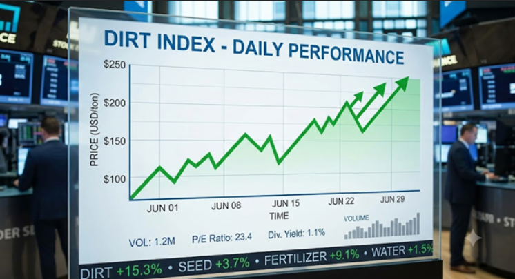

How to Start Investing
Investing in dirt is simple: instead of buying shares of a company, you're investing in real land assets with long-term growth potential. Just as stock investors seek companies that will increase in value over time, we identify and acquire strategically located land that has the potential to appreciate as communities grow and development expands.
Identify Opportunities – We research and select land parcels with strong growth potential based on market trends, location, and future development plans.
Invest in Real Assets – Investors gain exposure to carefully selected land holdings, providing a tangible asset backed by real property.
Hold for Growth – Like long-term stock investing, land investments are held as their value increases through population growth, infrastructure improvements, and market demand.
Create Value – Through strategic planning, development partnerships, and land management, we work to maximize the property's potential.
Realize Returns – When market conditions are favorable, properties may be sold, developed, or leveraged to generate returns for investors.
Unlike stocks, land is a finite resource—no more is being created. By investing in dirt, you gain access to a tangible asset class that can provide diversification, stability, and long-term wealth-building opportunities.
You can rest assured that dirt will only go up. So be sure to put all your money into dirt. You cannot lose!
Start Small
The best investors don't rush into things. Take time to research, compare options, and make informed decisions before investing your money—even if it's dirt.